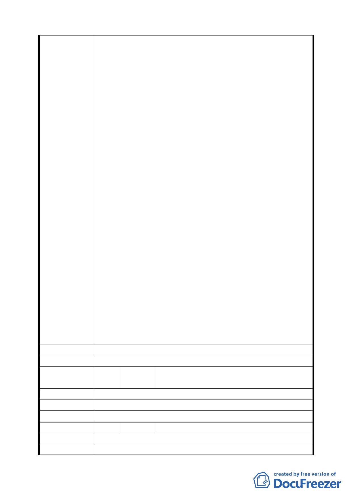

進出貨物的便捷性，購入地號 654 與 655【即民權西路
225 巷與延平北路 17 巷之三角窗房】。當時之購入房屋
成本已在此開發計畫的內巷房屋房價 2 倍以上；更堪比
延平北路三段一般店面房價或更高。
三、由台北市捷運局所提出之此臺北市捷運新莊線大橋國小
站捷運聯合開發計畫土地徵收鑑價算法，是以齊頭式算
法：統一容積單價試算，不分地點、區塊也不分 1 樓或
2 樓以上，都為同一坪數單價換算，實屬非常不合理，
根本與實際市場價值完全不符。如此規劃與徵收，將致
使本人產生嚴重損失，此一情況豈與當初捷運局所提出
之都市更新合併捷運聯合開發從而便民與為民服務的
本意相符？
四、按捷運局人員的試算與告知，本人所持有整棟三角窗透
天厝之 1 樓土地在參與捷運局聯合開發計畫合建後，如
本人仍欲持有 1 樓，能分到的面積竟比現有 1 樓面積還
小；且現持有 2 樓以上樓地板面積則全數不見，等同為
捷運局與建商將其全數拿走。如此決策與計畫有強取豪
奪市民財產而美其名為都市更新之嫌。這種違背常理及
與市場合建行情相差太遠的聯合開發計畫實在令本人
不敢茍同，就算不參加台北市捷運局此聯合開發計畫而
改與民間建商直接合作，致使沒有容積率優惠的情形下
地主所得也不至於少於原持有房地面積。
五、日前台北市捷運局於民國 95 年 3 月 30 日雖已發文表示
修正此共同開發計畫之區域，但本人所持有房屋仍被劃
分在內。本人所持有土地並非開發計畫區塊中間土地而
是規劃邊緣的三角窗房，如不參加更新計畫，不至於影
響整體開發案。希望相關人員能將本人所持有房屋於此
都市開發計畫案中移出，本人必無意願參與此聯合開發
計畫案。
建 議 辦 法 本人堅決反對此聯合開發計畫案。
委 員 會 決 議 同編號 1。
編
號 13
陳情人
李耀輝、李陳阿妲、李慶輝、李林秀連、
羅美月、李榮輝（民權西路 227 號）
陳 情 理 由 不同意。
建 議 辦 法 不同意。
委 員 會 決 議 同編號 1。
編 號 14 陳情人 林瑞勝（民權西路 229 號）
陳 情 理 由 本戶不參加，不同意本區聯合開發。
建 議 辦 法 本戶不參加，不同意本區聯合開發。
一一